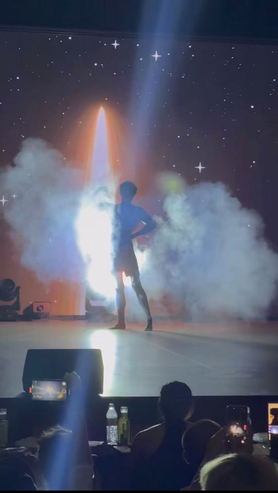
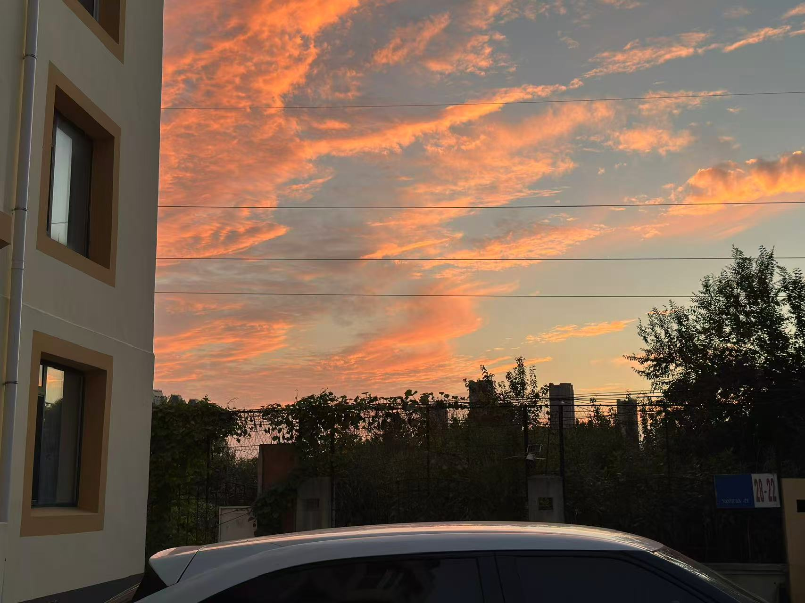
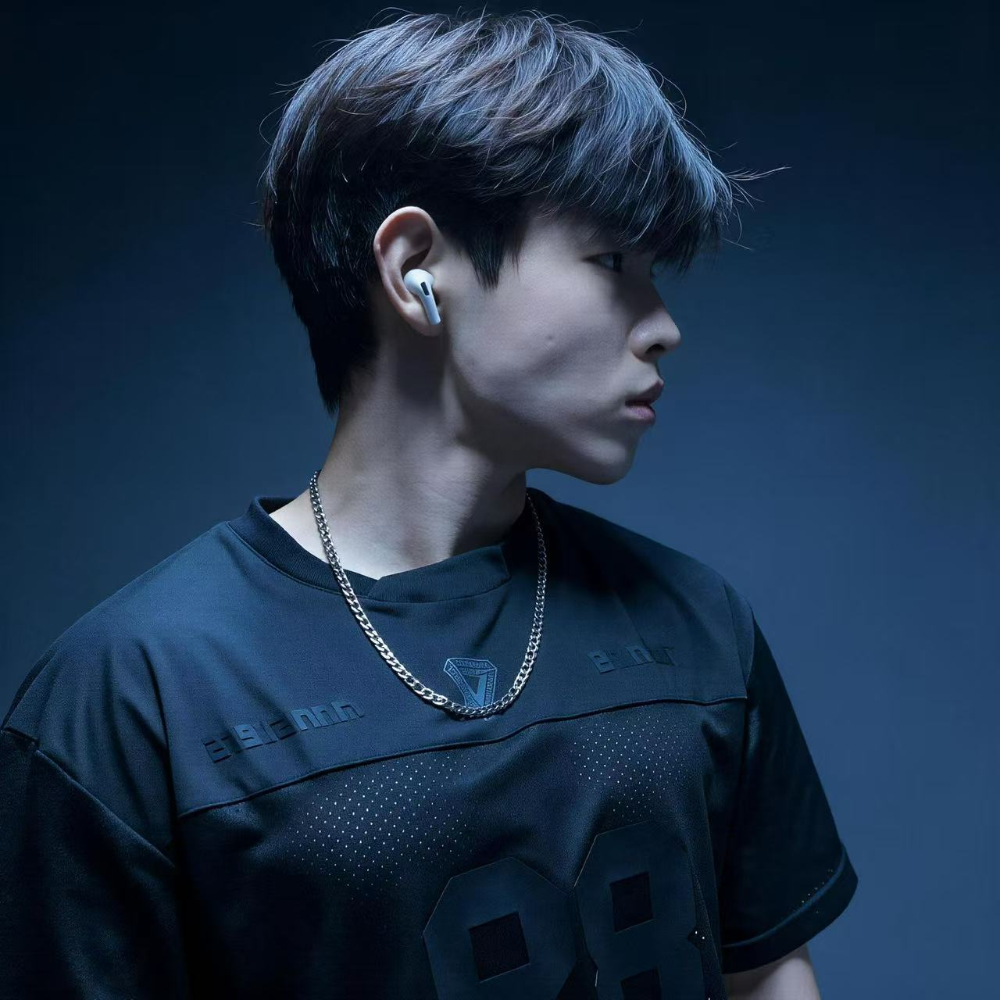

训练
日常与赛场
训练与赛场 · 2026
从日常训练，
到第一次登台。
2026 年 5 月 30 日，我第一次参加大连 DWOWS 健美比赛。舞台只有一会儿，训练和生活还在继续。
看看两次比赛的记录
2026.05.30 · 大连 DWOWS
共报 4 个组。青年组小组冠军、全场第 8 / 11；另外 3 个组第三名。
2026 年 9 月 · 沈阳聚力
最好成绩：组第六。


往下滑，依次看看训练、创作、工具和阅读。
关于我
辽宁辽阳 · 约 3 年力量训练经验
从零基础接触健康饮食和运动，到第一次走上健美赛场，训练是我长期积累的一部分。现在我也在练习拍视频，把自己的经历和选择表达出来。
整理 FishFlow、做这个网站，也是把学到的东西用起来。我想慢慢做起自己的账号，留下真实的训练、生活和作品。

抖音：281 粉丝，15 作品，公开获赞 1.7 万。
B 站：1,610 粉丝，39 投稿。
只记录当时核验的公开数字，最新数据请看平台主页。